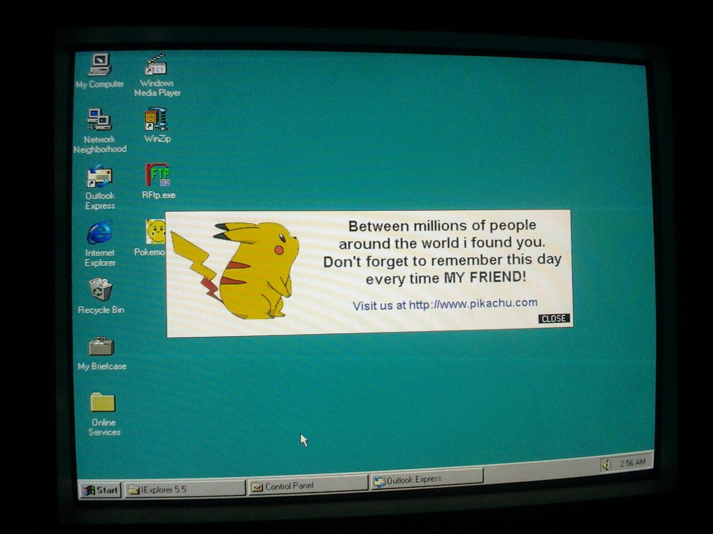

Fun Factoid: This is the infamous Pikachu Worm, spread via email with an attachment pokemonpikachu.exe that would send itself to all contacts stored within one’s Microsoft Outlook folders, attempt to delete System32, and wipe all files from your computer upon the next boot.
The problem with this is Windows has a built-in fail-safe, when deleting large amounts of files it will give a prompt to accept or decline the offer. declining will enact no further harm to your system, outside of having to decline every time you boot your pc. (of course there are ways around this to delete files and destroy your computer without permission but luckily thats not the case here)
You can watch it go here
If you’re interested, the creator of that video remade it and did another one with less of that electric whining noise.
Also, danooct1 is an incredible content creator, I’ve been watching him since 2009, give or take. I you’re interested in old viruses and worms, I sincerely recommend checking him out. He’s informative as well as entertaining in his presentations of these programs.